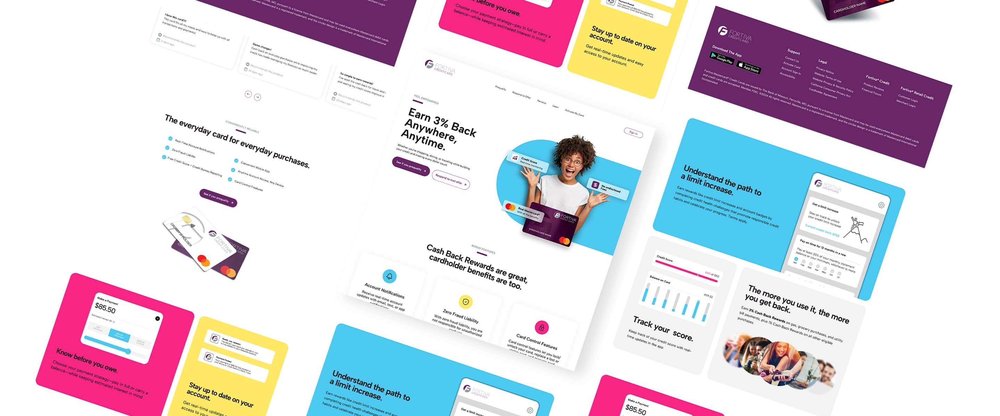

Fortiva Mastercard
Conversion-focused landing page redesign for a subprime credit card
Conversion rate
+20%
Driven by stronger value messaging, clearer hierarchy, and reinforced CTAs.
Bounce rate
-12%
Reduced by making the offer and trust signals easier to understand immediately.
Time on page
+15%
Improved through modular content blocks and a more guided reading flow.

Executive Summary
Fortiva targets users rebuilding credit, which makes trust and clarity the biggest barriers to conversion. The original landing page looked polished, but it delayed the strongest value proposition, split user attention across competing actions, and made users work too hard to understand the offer.
I redesigned the page to lead with 3% cash back, introduce trust signals earlier, and create a more guided path from interest to application. The result was a more conversion-focused experience that reduced friction and increased engagement.
01Context
Users in this category are skeptical by default. The page has to communicate value, reduce perceived risk, and make the next step obvious within seconds.
Audience
Consumers rebuilding credit who need reassurance, transparency, and a clear reason to apply.
Business Goal
Increase completed applications by improving apply intent and reducing abandonment early in the funnel.
Constraints
Compliance-driven messaging, multiple entry paths, and a mobile-first audience with low tolerance for confusion.
My Focus
Value-first hierarchy, CTA clarity, modular sections, and a stronger trust framework throughout the page.
02The Problem
The original page was brand-first instead of decision-first. It looked credible, but it did not help users answer three critical questions fast enough: What do I get? Can I trust this? What happens if I apply?
Pain Points
- Weak headline that did not communicate the strongest value proposition.
- Competing CTAs created hesitation at the top of the page.
- Trust signals appeared too late for a high-anxiety audience.
- Important details were buried in a brochure-like flow.
Friction Created
- Higher bounce from unclear value above the fold.
- Lower CTA click-through from split attention.
- Lower application starts from uncertainty around fees and eligibility.
- More scanning effort because the page was not structured around decision-making.
03Before vs After
This is the first place I would add more visual proof. Hiring managers love seeing exactly what changed and why.
Suggested image slot
Before Fold with 3 Callouts
Drop old hero screenshot here
Add numbered callouts for weak value prop, split CTAs, and missing trust.
Best use: full-width desktop screenshot with simple labels directly on the image.
Suggested image slot
After Fold with 3 Matching Callouts
Drop redesigned hero screenshot here
Call out stronger headline, primary CTA hierarchy, and support badges under the hero.
Best use: make this the direct visual answer to the old version beside it.
Suggested annotation block
Quick Comparison Summary
- Old: Generic headline and split intent. New: Clear 3% cash back message and stronger primary action.
- Old: Trust and detail appear later. New: reassurance starts above the fold.
- Old: Informational flow. New: guided conversion path.
04Strategy & Key Decisions
The redesign focused on reducing hesitation and making the next step feel safer and more obvious.
1. Lead with value
I moved 3% cash back to the top of the experience so users immediately understood why this card mattered.
2. Establish CTA hierarchy
I made prequalification feel like the primary path while keeping mail-offer response available as a secondary option.
3. Make the page scannable
I broke long informational blocks into modular sections and cards so users could process benefits faster.
4. Bring trust forward
I surfaced reassurance like no hidden fees, fraud protection, and credit score monitoring much earlier.
5. Create a guided flow
The page now moves from value to benefits to trust to FAQs to action instead of behaving like a static brochure.
6. Support mobile behavior
The redesign preserves hierarchy and CTA visibility on smaller screens where most drop-off would happen fastest.
05Process Gallery
This section is where you can make the case study feel more real. Right now you have strong final work. What will elevate it is showing evidence of thinking.
Recommended process visual
Question Hierarchy Audit
Show a simple annotated screenshot of the old page with notes like “What is the value?”, “Where is trust?”, and “What happens after click?”
Placeholder for annotated audit image
Great as a Figma screenshot with arrows and sticky-note style callouts.
Recommended process visual
Hero Iterations
Show 2 or 3 hero options side by side. Even rough comps work. This helps prove you explored multiple hierarchy directions.
Placeholder for hero exploration strip
Use labels like Version A, B, and Final with one-line rationale under each.
Recommended process visual
Content Modularization
Show how you turned dense blocks into cards or grouped sections. This is a strong visual proof point for conversion thinking.
Placeholder for section redesign comparison
Good place to compare the old “brochure” section against your new benefits grid.
Recommended process visual
Flow or CTA Map
Map where primary and secondary CTAs appear and why. It shows intentional decision design, not just UI polish.
Placeholder for CTA placement diagram
This can be a simple vertical page map with dots and arrows.
Best section to add next
What I would add if you want this to feel more senior
- A Before / After fold comparison right after the summary.
- A hero exploration strip showing one or two alternate directions you rejected.
- A mid-page section comparison proving how you improved scanability.
- A CTA map or user flow that shows primary and secondary paths.
- A mobile crop section with 2 or 3 callouts explaining why the hierarchy still works on small screens.
Good image idea
Annotated desktop crop: use this to explain one decision at a time without overwhelming the page.
Good image idea
Figma workbench screenshot: versions, notes, and arrows help the work feel more believable and strategic.
Good image idea
Mobile screen stack: show 3 crops with short callouts instead of just one long mobile render.
06Process
The work was not just visual cleanup. It was a restructuring of the page around decision-making.
Audit
I reviewed the original page to identify where value was delayed, where trust was missing, and where users were likely hesitating.
Reframing
I rebuilt the story around the strongest value proposition and paired it with reassurance points earlier in the experience.
Iteration
I explored hierarchy, CTA placement, and modular content blocks that would make the experience easier to scan.
Responsive Execution
I translated the new structure across desktop and mobile to preserve the same flow and clarity across breakpoints.
Validation
Success was measured through engagement and conversion metrics, with the strongest gains tied to clarity, hierarchy, and reduced friction.
What this proves
The redesign demonstrates conversion thinking, not just aesthetics. Every change had a clear behavioral purpose.
07Results
The redesigned experience improved both engagement and conversion by making value, trust, and next steps clear much earlier.
- Conversion rate increased by 20 percent through stronger messaging, better CTA hierarchy, and a more guided page flow.
- Bounce rate decreased by 12 percent because the offer became easier to understand above the fold.
- Average time on page increased by 15 percent thanks to clearer sectioning and a more scannable content structure.
Suggested future KPI block
If you want this section to look even stronger, add a visual KPI strip or simple analytics-style cards here using the same three numbers.
Takeaway
Reducing hesitation was the real design problem.
For a credit-rebuild audience, good design is not just visual polish. It is the ability to make value clear, reduce perceived risk, and create confidence in the next step. This redesign worked because it treated the page like a decision tool instead of a brochure.
Full Page View
Use this as the final proof of execution. Above this section, the process images should explain how you got here.

Similar Projects
More conversion-focused landing pages and acquisition experiences.